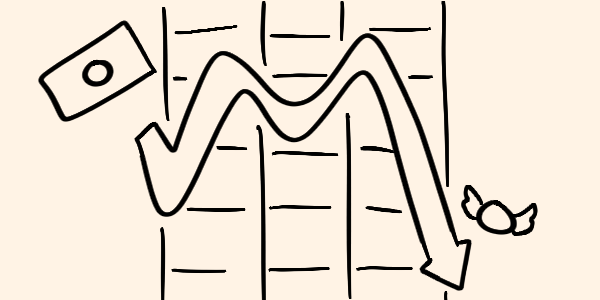

En los últimos días, el panorama financiero global se ha sacudido ante un evento inesperado: el colapso del Gran Banco de Pelstrot. Esta institución, considerada durante una década un pilar de estabilidad económica en la región, cayó abruptamente, dejando a empresarios, inversionistas y ciudadanos comunes en un estado de incertidumbre y pérdida. Mientras los analistas intentan comprender las causas detrás de este desplome, una sombra inquietante recorre el norte de Pelstrot: una ligera pandemia que, según muchos, podría haber actuado como catalizador de esta crisis.
Desde su fundación en 1897, el Gran Banco de Pelstrot se había consolidado como uno de los principales actores del sector financiero en la región. Con una red extensa de clientes que abarcaba desde pequeños comerciantes hasta grandes corporaciones, su reputación como una institución sólida e inquebrantable era indiscutible. Durante años, el banco mostró un crecimiento sostenido y una capacidad impresionante para sortear crisis económicas globales. Sin embargo, lo que ocurrió esta semana reveló una vulnerabilidad que nadie anticipaba.
El colapso fue tan repentino como devastador. En cuestión de días, el valor de las acciones del banco cayó un 85%, mientras que las cuentas bancarias de miles de clientes se congelaron. Empresarios e inversionistas, que dependían del banco para financiar proyectos clave, se encontraron de repente con pérdidas multimillonarias y sin acceso a sus fondos. Las ramificaciones económicas del colapso comenzaron a sentirse casi de inmediato, con despidos masivos, la cancelación de contratos y un clima generalizado de miedo entre la comunidad empresarial.
El colapso del banco coincidió con el surgimiento de una ligera pandemia en el norte de Pelstrot. Parfet una región históricamente conocida por su actividad industrial y agrícola. Aunque la pandemia no se ha propagado de manera alarmante, sus efectos han sido significativos. Desde hace semanas, varios sectores económicos en el norte se han visto afectados por la disminución de la fuerza laboral, la interrupción de cadenas de suministro y la pérdida de confianza por parte de los consumidores.
Los expertos señalan que la pandemia podría haber sido el detonante que expuso problemas estructurales previamente ocultos en el banco. "El Gran Banco de Pelstrot tenía una gran cantidad de activos invertidos en sectores vulnerables al impacto de esta pandemia, como la agricultura y la manufactura en el norte", explicó la economista Irina Kohler en una entrevista reciente. "Cuando esos sectores comenzaron a tambalearse, la capacidad del banco para cumplir con sus obligaciones financieras se desplomó".
El colapso no solo afectó a los grandes corporativos. Miles de pequeños y medianos empresarios también han sentido las consecuencias de esta debacle. "Tenía una línea de crédito con el Gran Banco para expandir mi negocio de maquinaria agrícola, pero ahora todo está paralizado", declaró Nathan Felstrow, un empresario local, en un comunicado lleno de frustración. Historias similares se repiten en toda la región: proyectos cancelados, deudas acumulándose y una sensación de impotencia frente a un sistema que parecía inquebrantable.
Por su parte, los inversionistas han enfrentado pérdidas catastróficas. Fondos de pensión, carteras de inversión y cuentas de ahorro quedaron atrapadas en el caos, lo que dejó a muchas familias sin acceso a sus ahorros. A pesar de las garantías iniciales del gobierno de Pelstrot, la falta de un plan claro para manejar esta crisis ha generado desconfianza y pánico en los mercados financieros.
Aunque el colapso del banco y la pandemia parecen fenómenos independientes, muchos analistas los describen como una "tormenta perfecta". A la pandemia y sus efectos económicos se suma un clima de inestabilidad global, marcado por tensiones comerciales y fluctuaciones en los mercados internacionales. Además, los informes preliminares sugieren que el banco podría haber estado ocultando problemas de liquidez mucho antes de que comenzara la pandemia.
Documentos filtrados recientemente revelan que el banco había estado asumiendo riesgos significativos en los últimos años, invirtiendo en sectores volátiles sin contar con los respaldos necesarios. Estas prácticas, combinadas con la pandemia, crearon un efecto dominó que resultó en el colapso total.
El gobierno de Pelstrot se enfrenta ahora a la difícil tarea de estabilizar la economía y restaurar la confianza de los ciudadanos. En un comunicado reciente, el presidente del país anunció un paquete de rescate económico que incluye la nacionalización parcial del banco y ayudas directas a las empresas más afectadas. Sin embargo, estas medidas han sido criticadas por algunos sectores, que las consideran insuficientes y tardías.
"Es fundamental que aprendamos de esta crisis y reforcemos la regulación financiera para evitar que algo así vuelva a ocurrir", declaró el analista financiero Harold Blenswick. "El colapso del Gran Banco de Pelstrot no solo es un golpe a la economía, sino también una lección sobre los peligros de la complacencia y la falta de transparencia".
Mientras Pelstrot intenta reconstruirse tras esta crisis, quedan muchas preguntas sin respuesta. ¿Cómo se gestionará la pandemia en el norte y qué tan grave podría llegar a ser? ¿Lograrán las autoridades restaurar la confianza en el sistema financiero? ¿Y qué implicaciones tendrá esta crisis para el resto del mundo?
El colapso del Gran Banco de Pelstrot es un recordatorio de que incluso las instituciones más fuertes pueden caer ante circunstancias extraordinarias. En un mundo cada vez más interconectado, las crisis locales pueden tener efectos globales, y la capacidad de adaptación será clave para enfrentar los desafíos que están por venir.
Por ahora, los ciudadanos y empresarios de Pelstrot deben enfrentar un periodo de incertidumbre, esperando que las lecciones de este evento sirvan para construir un futuro más estable y resiliente.
